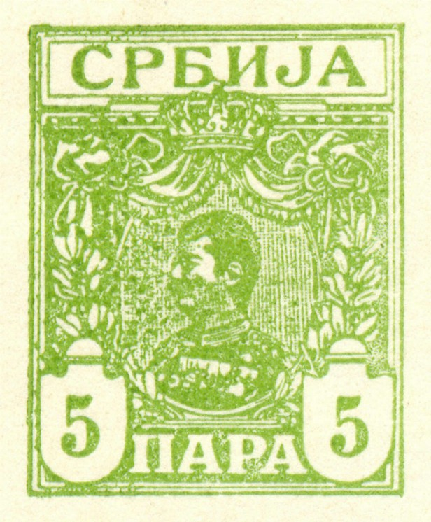

Sheet with imperforate forgeries of the 5 pa value
Note: on my website many of the
pictures can not be seen! They are of course present in the
catalogue;
contact me if you want to purchase the catalogue.
Lucien (or Lucian as he is called in Focus on Forgeries) Smeets was a Belgian forger (Brussels) around 1910.
Forgeries of the 'para' values of Serbia were made by Lucian Smeets (1912?). A description can be found in 'Focus on Forgeries' by Varro E. Tyler. In the forgeries, the 'C' has the open ends at the right hand side farther apart. I'm not sure if the next forgeries are those described in this book:
Sheet with imperforate forgeries of the 5 pa value

Zoom-in of one of these forgeries. Forgeries of the 'Dinar'
values also exist (all three values). I do not know the
distinguishing characteristics of these forgeries.
Forgeries of the whole set of the 1914 issue of Serbia were made by Lucien Smeets (1914?). A description can be found in 'Focus on Forgeries' by Varro E. Tyler. The 'N' and 'J' of the word 'CPbNJA' overlap each other slightly in these forgeries. The Smeets forgeries are more common than the Fournier forgeries.


Left Smeets forgery and right genuine 5 p stamp, images obtained
from Bill Claghorn's forgery identification site
(http://members.tripod.com/claghorn1p/Serbia/Serb79x.htm)

Smeets forgery of the 5 D value, image obtained from Bill
Claghorn's forgery site :
http://members.tripod.com/claghorn1p/Serbia/Serb86x.htm
A forgery of the 5 G value Queen Wilhelmina 1891 issue was made by the forger Lucien Smeets (from Brussels, Belgium). Smeets used the double circle cancel 'SITTARD 24 MEI 07 1-2 N'. See also www.bondskeuringsdienst.nl/hh48.pdf. Sorry, no image available yet.
Lucien Smeets also made forgeries of the 9 p green Queen Victoria 1883 stamp of Great Britain and of a Gambia 2 Sh King Edward VII stamp.
{kind=link}